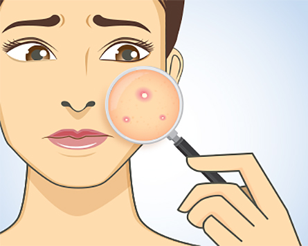

How Is Acne Treated?
Only three types of drugs have proven to be effective for the treatment of acne -- antibiotics, benzoyl peroxide, and retinoids. Most people require at least one or two agents, depending on the severity of their acne.
- Benzoyl peroxide , available as an over-the-counter product (for example, Clearasil, Stridex) and by prescription (for example, Benoxyl, PanOxyl, Persagel), targets surface bacteria, which often aggravate acne. Irritation (dryness) is a common side effect.
- Retinoids (vitamin A derivatives), for example, Differin, Retin-A, Tazorac, treat blackheads and whiteheads, the first lesions of acne. The most common side effect is irritation. While most are prescription only, there is an over-the-counter version of Differin now available.
- Antibiotics , either topically applied to the skin (clindamycin, erythromycin), or taken orally (tetracycline and its derivatives, trimethoprim-sulfamethoxazole) control surface bacteria and reduce inflammation in the skin. Antibiotics are more effective when combined with benzoyl peroxide or retinoids. The oral retinoid isotretinoin (Absorica, Amnesteem, Claravis, Myorisan and Zenatane) is reserved for people with severe (nodular or cystic) disease. Isotretinoin shrinks the size of oil glands, the anatomic origin of acne. Without active, plump oil glands, acne actively diminishes. Side effects can include dry skin, elevated cholesterol and triglycerides, and birth defects. Women of childbearing age must practice birth control before, during, and after treatment (about one month) with isotretinoin. The use of isotretinoin requires rigorous testing (cholesterol, pregnancy, triglyceride, cholesterol, liver function and bone marrow function) and follow-up for the prescribed period (5 or more months). It is reserved for the most severe types of acne that do not respond to other treatments.
- Hormone therapy may be helpful for some women with acne, especially for those with signs and symptoms (irregular periods, thinning hair) of androgen (male hormone) excess. The hormone therapy consists of low-dose estrogen and progesterone (birth control pills) or anti-androgen medications (spironolactone).